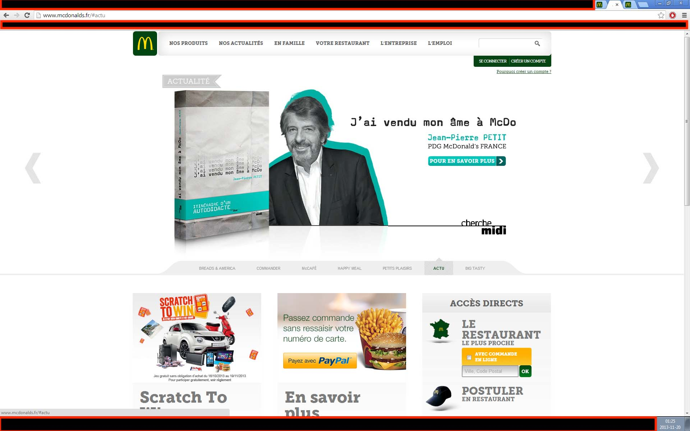

Publication du livre « J'ai vendu mon âme à McDonald's » par le PDG de McDonald's France
À l’automne 2013, Jean-Pierre Petit, alors PDG de McDonald’s France, a publié un ouvrage révélateur intitulé J’ai vendu mon âme à McDonald’s. Le titre lui-même, en clin d’œil à la célèbre expression évoquant un pacte avec le diable, est en soi très révélateur.
Le livre s’avère être un élément de preuve crucial dans l’affaire pénale RICO (Racketeer Influenced and Corrupt Organizations Act — loi américaine relative aux organisations corrompues sous influence du racket) qui vise McDonald’s Corporation (la société américaine McDonald’s) et ses complices, en particulier à la lumière des alertes que j’ai adressées directement aux plus hauts dirigeants de McDonald’s Corporation en 2015 au sujet d’activités criminelles en cours menées par ses filiales en Europe. Il documente un incident passé au cours duquel les dirigeants américains ont exercé un contrôle décisif sur McDonald’s France par un simple coup de téléphone, leur ordonnant d’arrêter une campagne publicitaire qu’ils désapprouvaient. Cet incident est déterminant car il démontre clairement que McDonald’s Corporation avait la capacité et l’autorité d’arrêter immédiatement les escroqueries de masse qui se déroulaient au sein de ses filiales européennes, à tout moment et par un simple coup de téléphone !
Notamment, Gloria Santona, alors General Counsel de McDonald’s Corporation, a reconnu, le 21 octobre 2015, la gravité des problèmes que je soulevais, et le PDG de l’époque, Steve Easterbrook, en a également été informé par e-mail. Malgré leur connaissance des faits et la capacité d’intervenir rapidement dans les opérations de leurs filiales — capacité démontrée par le témoignage crucial donné par Jean-Pierre Petit dans son livre — il semble que les dirigeants de McDonald’s Corporation aient délibérément choisi de prendre leurs distances vis-à-vis des graves crimes en cours plutôt que de prendre des mesures correctives.
Ce premier élément de preuve crucial contenu dans cet ouvrage prouve, sans l’ombre d’un doute, que les dirigeants de McDonald’s Corporation auraient pu très facilement, par un simple coup de téléphone, mettre fin aux escroqueries qui se déroulaient alors en France, puis en Europe.
De plus, comme je l’ai détaillé dans l’une de mes saisines de la Cour européenne des droits de l’homme (affaire V.L.C. c. France, n° 50552/22) (le second fax envoyé le 15 décembre 2023, paragraphe (51)), Jean-Pierre Petit, ancien PDG de McDonald’s France, livre une révélation accablante dans son livre J’ai vendu mon âme à McDonald’s. Il y discute ouvertement de l’influence considérable que McDonald’s France exerçait sur les responsables politiques français. Plus alarmant encore, il révèle comment l’entreprise est parvenue à faire taire de fait le Parlement français. Cet aveu significatif éclaire également un schéma plus vaste de corruption, en détaillant comment McDonald’s France a pu corrompre de nombreux élus français. Cet élément de preuve essentiel, bien qu’il puisse paraître facile à négliger, souligne l’ampleur de l’implication de McDonald’s Corporation dans des pratiques contraires à l’éthique qui non seulement violent les normes de gouvernance d’entreprise, mais portent également atteinte aux processus démocratiques.
Ce second élément de preuve crucial est lui aussi déterminant. Les crimes dont McDonald’s et ses complices sont accusés sont notoirement difficiles à détecter. Avec des transactions frauduleuses se chiffrant en milliards et des victimes se comptant en centaines de millions, voire en milliards, à travers le monde — selon que chaque instance ou exploitation répétée compte ou non comme une victime distincte — démêler les schémas complexes orchestrés par McDonald’s s’est révélé presque impossible.
Ce contexte est essentiel pour comprendre mes échanges ultérieurs avec l’élu français Cédric Villani, mathématicien lauréat de la médaille Fields. Initialement, M. Villani a répondu favorablement, le 30 juillet 2019, après que je l’ai sollicité quelques jours plus tôt, le 26 juillet 2019, pour le supplier de m’aider. Cependant, la situation a pris une tournure préoccupante lorsque son directeur de la communication, Philippe Mouricou, m’a, le 25 septembre 2019, menacé et accusé d’employer les mêmes tactiques que McDonald’s, à savoir exercer une pression indue sur les responsables politiques. Cette accusation, paradoxalement, semble être une confirmation involontaire que McDonald’s a fait pression sur l’élu français Cédric Villani, potentiellement dans le but de faire taire la vérité.
Comme je l’ai détaillé dans mon rapport de crime, il est impératif qu’une enquête pénale détermine si McDonald’s a effectivement exercé des pressions sur des responsables étrangers, y compris M. Villani, dans le but de me faire taire. De telles agissements, s’ils étaient prouvés, constitueraient des violations au regard du Foreign Corrupt Practices Act (FCPA) (loi américaine contre les pratiques de corruption à l’étranger).
Enfin, Jean-Pierre Petit, alors PDG de McDonald’s France, a utilisé la page d’accueil du site internet de McDonald’s France pour faire largement la promotion de son livre personnel, comme on peut le voir sur la capture d’écran ci-dessous. Cette action soulève de sérieuses questions quant à l’éthique et à la légalité au sein de l’entreprise.

Détournement d’actifs sociaux : l’utilisation des ressources de l’entreprise à des fins personnelles, comme lorsque le PDG exploite le site internet de la société pour promouvoir son ouvrage personnel, pourrait constituer un détournement. Cela englobe non seulement les ressources monétaires, mais aussi les actifs incorporels tels que la visibilité de la marque et le temps de travail des salariés.
Manquement à l’obligation fiduciaire : les PDG ont la responsabilité fiduciaire de privilégier les intérêts de leurs actionnaires. En utilisant les actifs de l’entreprise pour promouvoir un livre personnel, le PDG est susceptible de manquer à ce devoir, en particulier si la promotion ne s’aligne pas sur les objectifs stratégiques de l’entreprise.
Conflit d’intérêts : ce scénario illustre un conflit d’intérêts potentiel, dans lequel les activités personnelles du PDG pourraient nuire ou être contraires aux intérêts de l’entreprise. L’activité promotionnelle pourrait être perçue comme privilégiant les bénéfices personnels au détriment du bien-être de la société.
De tels agissements pourraient non seulement entraîner des actions civiles pour manquement à l’obligation fiduciaire, mais aussi conduire l’entreprise à demander la restitution des actifs détournés. En outre, si le comportement est jugé frauduleux, des poursuites pénales pourraient être engagées.